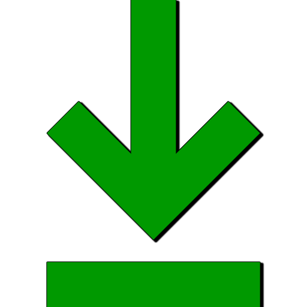

<!doctype html>
<html>
<head>
<meta charset="utf-8">
<link rel="icon" href="favicon.ico">
<title> Downloading prices from exchanges</title>
</head>
<style>
	body{
		background-color: #0101010a;
		margin: 0;
		font-family: Inter, -apple-system, BlinkMacSystemFont, "segoe ui", Roboto, Helvetica, Arial, sans-serif;
		font-size: 13px;
	}

	/* Block , links as buttons */
	.button {
		display: inline-block;
		font-family: arial,sans-serif;
		font-size: 14px;
		font-weight: bold;
		color: rgb(68,68,68);
		text-decoration: none;
		user-select: none;
		padding: .2em 0.8em;
		outline: none;
		border: 1px solid rgba(0,0,0,.1);
		border-radius: 2px;
		background: rgb(245,245,245) linear-gradient(#f4f4f4, #f1f1f1);
		transition: all .218s ease 0s;
		margin: 5px;
		cursor: pointer;
	}
	.button:hover {
		color: rgb(24,24,24);
		border: 1px solid rgb(198,198,198);
		background: #f7f7f7 linear-gradient(#f7f7f7, #f1f1f1);
		box-shadow: 0 1px 2px rgba(0,0,0,.1);
	}
	.button:active {
		color: rgb(51,51,51);
		border: 1px solid rgb(204,204,204);
		background: rgb(238,238,238) linear-gradient(rgb(238,238,238), rgb(224,224,224));
		box-shadow: 0 1px 2px rgba(0,0,0,.1) inset;
	}
	.img_button{
		width: 16px;
		margin-bottom: -3px;
		cursor: pointer;
	}
	.img_icon{
		width: 16px;
		margin-bottom: -3px;
		cursor: pointer;
	}
	.td_center{
		text-align: center;
		margin: 3px;
		padding: 3px 5px;
	}
	.table_block{
		border: 1px solid #aeaeae;
		border-radius: 6px;
		border-spacing: 0;
		margin: 12px;
		padding: 8px;
		min-width: 400px;
		box-shadow: 0 0 10px rgb(0, 0, 0, 0.4);
	}
</style>
	
<script src="https://code.jquery.com/jquery-3.6.0.js"></script>
<script>

	class Get{
		//*******************************************************************************************
		// Download the list of exchanges
		static birzi(){
			$.get("./api/?act=birzi", function(data) {
				// Let's show you the result
				HTML.listBirzi(data);

				// After downloading the exchanges, load the list of settings with checkboxes.
				Get.checkbox();
			});
		}

		//*******************************************************************************************
		// Let's load the list of exchanges and update the data at the list, the counter of the number of downloads and the last log
		static refresh(){
			$.get("./api/?act=birzi", function(data) {
				HTML.updateCountLoad(data);
			});
		}

		//*******************************************************************************************
		// Load the current time of the next download
		static time(){
			$.get("./api/?act=time_load", function(data) {
				HTML.time(data);
			});
		}

		//*******************************************************************************************
		// Load the list of checkboxes
		static checkbox(){
			$.get("./api/?act=checkbox", function(data) {
				HTML.checkbox(data);
			});
		}

		//*******************************************************************************************
		// Switching the bot's loading activity
		static onoff(name){
			$.get(`./api/?act=onoff&name=${name}`, function(data) {
				if(data[name]['auto_start']){
					$(`#${name}_auto_start`).attr('src','img/On.png');
				}else{
					$(`#${name}_auto_start`).attr('src','img/Off.png');
				}
			});
		}

		//*******************************************************************************************
		// Switching the bot's loading activity
		static checkboxOnOff(name){
			$.get(`./api/?act=checkboxOnOff&name=${name}`, function(data) {
				if(data[name]['act']){
					$(`#${name}_act`).attr('src','img/On.png');
				}else{
					$(`#${name}_act`).attr('src','img/Off.png');
				}
			});
		}
	}

	class HTML{

		//*******************************************************************************************
		// Let's show the counter of the price reloading time
		static time(setting){
			if(setting['time_load']<=1){
				Get.refresh();
			}
			$("#time_load").html(setting['time_load']);
		}

		//*******************************************************************************************
		// Let's update the list of exchanges, the download counter and the last log message
		static updateCountLoad(birzi){
			// If there is a list of exchanges, we'll show it to you
			if(Object.keys(birzi).length>0){
				for (let key in birzi) {
					$(`#${key}_count_load`).html(birzi[key]['count_load']);
					$(`#${key}_log`).html(birzi[key]['log']);
				}
			}
		}

		//*******************************************************************************************
		// Create a block with exchanges
		static listBirzi(birzi){
			let html = `<table class=table_block>
				<tr>
					<td class=td_center>#</td>
					<td>Название</td>
					<td class=td_center>ON/OFF</td>
					<td class=td_center></td>
					<td></td>
				</tr>`;
			
			// Error in operation
			if('code' in birzi){
				$('#list_birzi').html("Ошибка загрузки");
				return false;
			}

			// If there is a list of exchanges, we'll show it to you
			if(Object.keys(birzi).length>0){
				for (let key in birzi) {
					// Let's check the startup status of the download for the exchange
					let img_start = 'Off';
					if(birzi[key]['auto_start']){
						img_start = 'On';
					}

					html += `
						<tr>
							<td class=td_center></td>
							<td>${key}</td>
							<td class=td_center></td>
							<td id="${key}_count_load" class=td_center>${birzi[key]['count_load']}</td>
							<td id="${key}_log">${birzi[key]['log']}</td>
						</tr>`;
				}
			}
			html +=`
				<tr>
					<td colspan=5 class=td_center>The next update in<b><span id="time_load">0</span></b></td>
				</tr>
			</table>`;

			$('#list_birzi').html(html);
			
			// Every second we get data from the server
			var time = setInterval(function(){
				Get.time();
			}, 1000);

			// We'll update the number of downloads every 10 seconds.
			var refresh = setInterval(function(){
				Get.refresh();
			}, 5000);

		}

		//*******************************************************************************************
		// Create a block with checkboxes
		static checkbox(checkbox){
			let html = `<table class=table_block>
				<tr>
					<td class=td_center>Состояние</td>
					<td>Название</td>
				</tr>`;

			// If there is a list of exchanges, we'll show it to you
			if(Object.keys(checkbox).length>0){
				for (let key in checkbox) {
					// Let's check the startup status of the download for the exchange
					let img_start = 'Off';
					if(checkbox[key]['act']){
						img_start = 'On';
					}

					html += `
						<tr>
							<td class=td_center></td>
							<td >${checkbox[key]['name']}</td>
						</tr>`;
				}
			}
			html +='</table>';
			$('#list_checkbox').html(html);

		}

		//*******************************************************************************************
		// What you need to do at startup.
		static start(){
			Get.birzi();
		}
	}
 
	//**********************************************************
	//When the page has finished loading, we will show the settings
	$(function(){
		HTML.start();
	});
</script>
<body>
	<center>
		<div id="list_birzi"></div>
		<div id="list_checkbox"></div>
	</center>
</body>
</html>
